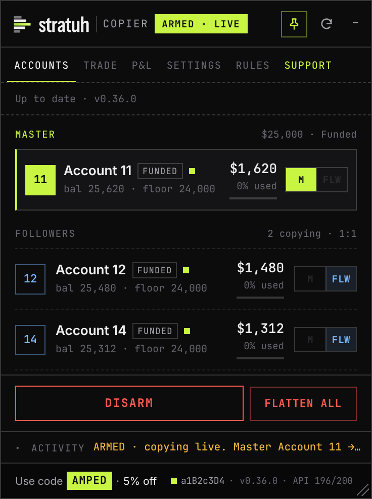
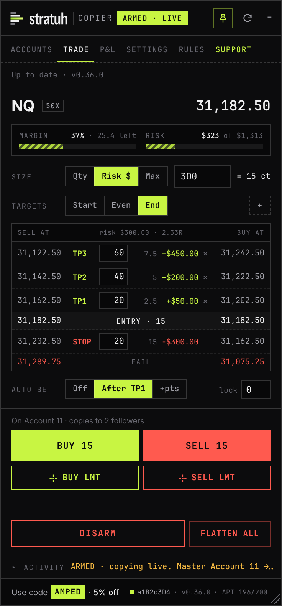

It places real orders on live accounts. Once armed, every order on your master is sent to every follower within a fraction of a second. One bad trade hits every linked account at once. Vest has no official copier, and you are responsible for every order this sends. Start with the smallest size.
1Install
About two minutes. You need Chrome, Edge, Brave or Firefox on a computer.
- Install the Tampermonkey extension from your browser's extension store.
- Chrome, Edge, Brave: open
chrome://extensions, click Details on Tampermonkey, and turn on Allow User Scripts.Without this, Tampermonkey installs the script but never runs it. Older browser versions call it Developer mode (top-right of the extensions page). Firefox doesn't need it. - Open the install link: vest-copier.user.js on GitHub. Tampermonkey shows an install page; click Install. It then updates itself when a new version is released.No link? Click the Tampermonkey icon, Create a new script, delete the template, paste the entire contents of
vest-copier.user.jsand press Ctrl+S. Paste the text itself: a .txt file opened in the browser isn't installed. - Open or refresh next.vestmarkets.com and log in. The Vest Copier panel appears in the top-right. Drag its header to move it and its bottom-right corner to resize it.
Updating: when a new version is out, a green bar in the panel shows Install. Click it, click Update on Tampermonkey's page, then come back to the Vest tab: it reloads by itself. Do it while you're flat. Your settings are kept.
2Copy your first trade
- On the Accounts tab, click M on the account you'll trade. That's the master.
- Click Flw on each account that should copy it. Those are the followers.By default followers must be the same size and type as the master. To mix sizes, turn on Cap-to-fit in Settings first (see Sizing).
- Set your leverage on Vest the way you'll trade, then click ARM. On first use, read the risk terms, tick the box and click Accept and continue.Arming checks every account, then sets each follower's leverage to match the master.
- Trade the master as you normally would, on Vest's own ticket or the Trade tab. Each order appears in the log, followed by one line per follower and a fill summary such as
Fills 3/3 confirmed · avg slip 0.25pt. - Click DISARM when you're finished. Disarming stops copying. It does not close anything.

When ARM refuses
The log names the account and the reason. Arming is allowed when everyone is flat, or when the master and followers already hold the same trade (same market, same direction): that trade is adopted and managed from then on. It refuses when a follower is in the opposite direction, holds a trade the master doesn't, or has a resting order. Fix that account on Vest and arm again.
3The Trade tab
An order ticket built around points. It trades the master; when armed, followers copy it like any other master order.
| Field | What it does |
|---|---|
| Size | Contracts, or Risk $: the panel sizes the order so hitting your stop loses that amount. NQ is $1 per point per contract. |
| Stop | Distance from your entry, in points. |
| Targets | One or more distances in points. + Add target adds another. |
| Scale | How the size splits across targets: Start puts the most on TP1, Even splits evenly, End puts the most on the last target. |
| Measure from | Your fill (default) moves the stop and targets to exactly your points from the price you actually got. Price at click leaves them where they were placed. |
| Breakeven | After TP1 or At +pts moves the stop to your entry. Lock adds a point or two of profit to cover fees. |
Before you click, the panel shows each target's size and dollar value, your risk, reward and R, and the exact prices for both Buy and Sell. Stops and targets are placed as Vest's own stop-loss and take-profit orders, so they still work if you close the tab.

Adding to a trade
If the master already holds a position in the same direction, Buy or Sell adds to it, and followers add to theirs. The stop and targets are then rebuilt for the whole position from the new average entry, and the full size is re-split by your Scale setting. An order in the opposite direction is refused: close or reduce the trade first.
Breakeven runs in your browser. Keep the Vest tab open for it to move your stop. It survives a page refresh and stops watching once the trade closes.
4Sizing
Strict 1:1 (default)
Every follower gets the master's exact size. Followers must be the same size and type as the master. Simple and predictable for matched accounts.
Cap-to-fit (Settings)
Each follower is sized to its own equity, so you can mix account sizes. Every account takes the same percentage risk with the same stop distance.
// only when scaling down: × 0.95 buffer, rounded down to Vest's 0.0001 size step
Example: a $25k master trading 1 NQ drives a $5k follower at about 0.19 NQ. Both lose the same share of their account if the stop is hit. An account too small to hold even the minimum size is skipped, with a line in the log saying so.
5What gets copied
| On the master | On each follower |
|---|---|
| Open, with stop and targets | Copied. Same prices; sizes scaled with Cap-to-fit. |
| Add to position | Copied, scaled to the follower's size. |
| Partial close / close | Copied, in proportion. |
| Move, add or remove a stop or target | Copied to the matching order. |
| Cancel a resting limit order | Copied. |
| Stop or target fills | Each account's own stop and targets fill on Vest at the same prices. |
| Anything while disarmed | Not copied. |
| Orders Vest refuses on the master | Not copied. |
| Vest closing the master for you | Not copied. A drawdown breach or liquidation isn't an order you placed, so followers stay open. Close them yourself or use Flatten All. |
| Trades placed on a follower | Ignored. Only the master is watched. |
6Safety controls
DISARM
Stops copying immediately. Open positions stay open.
Flatten All
Closes every position and cancels every order on all loaded accounts, then disarms. It asks you to confirm. Use it in an emergency, not as a routine close.
Fill check
After each entry, the copier confirms every account actually filled. One that didn't is named in the log and dropped from that trade.
Site check
When Vest updates its website, the status bar turns amber and arming pauses. Click the bar to run a read-only check. If nothing is red, click Accept this build.
After a Vest update, do one small test before trading size: one follower, open with a stop, move the stop, close.
7Good habits
- Start with the smallest size across every account, and confirm the fills line before trading bigger.
- Size so that losing on every account at the same time is survivable.
- Set your stop when you enter, so every account is protected from the first second.
- Disarm before placing a trade on the master that you don't want copied.
- Changed leverage or market? Disarm and arm again so followers match.
- Disarm and go flat when you're done for the day.
8Troubleshooting
- The panel doesn't appear
- Check that the script is enabled in Tampermonkey, that Allow User Scripts is on (step 2), and that you're on next.vestmarkets.com. Then refresh.
- Can't select a follower
- It's a different size or type than the master. Turn on Cap-to-fit in Settings, or pick matching accounts.
- "… did NOT fill"
- Vest accepted the order but didn't execute it, usually because the account lacks margin for that size. Trade smaller or turn on Cap-to-fit.
- "Vest updated" (amber bar)
- Click it and run the site check. Arming stays paused until you accept the new build.
- Something looks wrong
- Click Diag under the activity log. It downloads a file describing every order, size and fill, with no passwords or login tokens in it. Send that file with a note on what you expected.